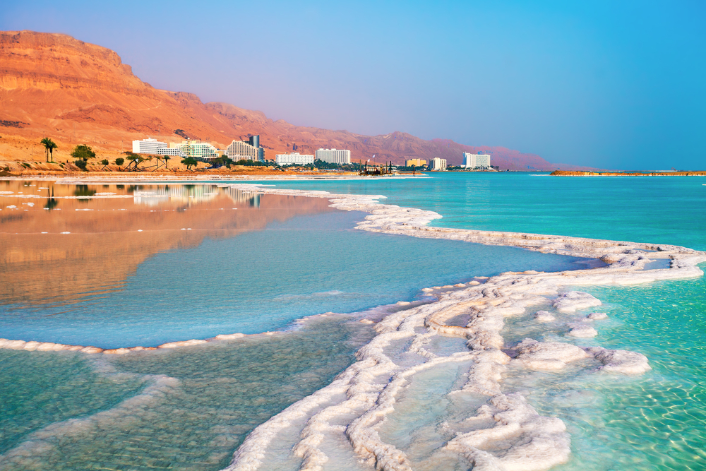

×

Israel
Климат
Климат Израиля субтропический, хотя из-за особенностей географического положения и рельефа даже на столь небольшой территории встречаются участки с тропическим сухим и умеренным типами климата.
Средняя температура января колеблется от +6°С ночью до +18°С, июля - от +23°С до +30°С. Правда, одна и та же температура из-за разницы во влажности воздуха в разных районах страны тоже воспринимается по-разному. В Эйлате тепло в течение всего года (с апреля по октябрь средняя температура воздуха составляет около +26°С, максимальная доходит до +40°С), в то время как на севере страны и в горных районах контрасты значительно больше. В Тиберии, например, среднеянварская температура колеблется возле отметки +18°С, в июле же столбик термометра вплотную подбирается к +37°С. Осадков выпадает от 100 до 800 мм в год, преимущественно зимой (с ноября по март). Наибольшее их количество фиксируется обычно в декабре-феврале. Летом же по всей территории страны стоит сухая погода - нередки годы, когда с июня по сентябрь здесь вообще не выпадает ни капли дождя.
____